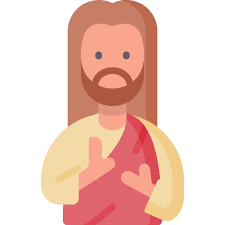

Cristão significa “seguidor de Cristo”. Um cristão é uma pessoa que ama a Jesus, aceitou-o como seu Salvador e obedece aos seus mandamentos. Um verdadeiro cristão segue Jesus de todo coração, não apenas por tradição.
Ser cristão é aderir ao cristianismo, uma religião centrada em Jesus de Nazaré, aceitando-o como Senhor e Salvador, e vivendo de acordo com os seus ensinamentos de amor, justiça e misericórdia. Significa ser um imitador de Cristo, buscando a santidade e sendo guiado pelo Espírito Santo para transformar a sociedade e ser sal e luz no mundo.
A Bíblia diz que nós, em Cristo, somos filhos de Deus, novas criaturas (2 Coríntios 5:17), um povo escolhido e separado (1 Pedro 2:9), e herdeiros da promessa (Gálatas 3:29). Também nos descreve como cooperadores de Deus (1 Coríntios 3:9), membros do corpo de Cristo (1 Coríntios 12:27), e sal e luz do mundo (Mateus 5:13-14).
Nosso valor não deve depender da opinião dos outros, mas do que Deus diz sobre nós. A Bíblia revela que, em Cristo, somos: filhos amados, escolhidos e adotados, valiosos e obra de Deus, redimidos pelo sangue de Jesus, novas criaturas, justos, templos do Espírito, santos, amigos de Deus, embaixadores e luz no mundo, membros do corpo de Cristo, herdeiros do Reino e extremamente amados. Quanto mais conhecemos a Palavra, mais nos transformamos à imagem de Cristo.
O amor de Deus por nós é descrito como um amor incondicional, infinito e universal, que não se baseia em nossas falhas ou méritos, mas sim na Sua natureza bondosa e fiel. Manifesta-se na criação, nas bênçãos diárias, no perdão e, principalmente, no sacrifício de Jesus Cristo para a salvação da humanidade, que é a maior prova desse amor. Este amor é um convite para que nos abramos a Ele, recebamos Sua graça e vivamos em comunhão, amando-O e ao próximo em resposta.
O dever de amar a Deus envolve priorizá-Lo acima de tudo, buscando uma vida de obediência, adoração e serviço, demonstrando o amor através de ações como o cuidado com o próximo e o arrependimento. É um compromisso diário de colocar Deus no centro das decisões e de viver de acordo com Seus ensinamentos, o que resulta em um relacionamento de confiança, entrega e gratidão.
